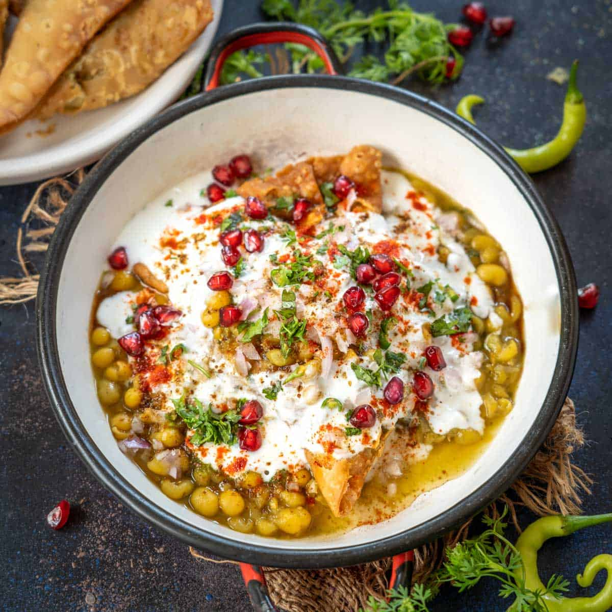

Home
Samosa chaat

Description:
The above image shows a loaded bowl of samosa chaat, the ultimate Indian street food snack
that's basically a party in a bowl.
Since people in India love a good mix of flavors, this dish starts with crunchy samosas smashed
up and soaked in a warm, spicy ragda (yellow pea curry). It's topped with a big dollop of cool
dahi (yogurt) and tangy chutneys to give it that perfect hit of sweet and spicy.
The whole thing is finished off with fresh coriander, chopped onions, a bit of masala, and juicy pomegranate
seeds for a nice little crunch. It's a classic mix of crispy, soft, and saucy textures that shows why chaat is
the go-to comfort food for everyone.
Ingredients:
- Samosas
- Ragda
- Dahi
- Tamarind chutney
- Green mint-coriander chutney
- Red onion
- Pomegranate seeds
- Fresh coriander
- Red chili powder
- Chaat masala
- Green chilies
Steps:
- Place two fresh samosas in a wide bowl and lightly smash them into bite-sized chunks to create a sturdy
base.
- Ladle warm, seasoned ragda over the broken samosas until they are partially submerged and begin to soak
up the savory pea curry.
- Drizzle a generous amount of whisked dahi across the top to add a cooling, creamy layer.
- Add splashes of sweet tamarind chutney and spicy green mint-coriander chutney to balance the heat with
tanginess.
- Scatter a handful of finely chopped red onions over the surface for a fresh, sharp crunch.
- Dust the entire bowl with red chili powder and chaat masala to sharpen the flavors and add a final punch
of spice.
- Garnish with a sprinkle of chopped fresh coriander and a few pomegranate seeds for a pop of color and
sweetness.
- Serve immediately with green chilies on the side for anyone wanting extra heat.